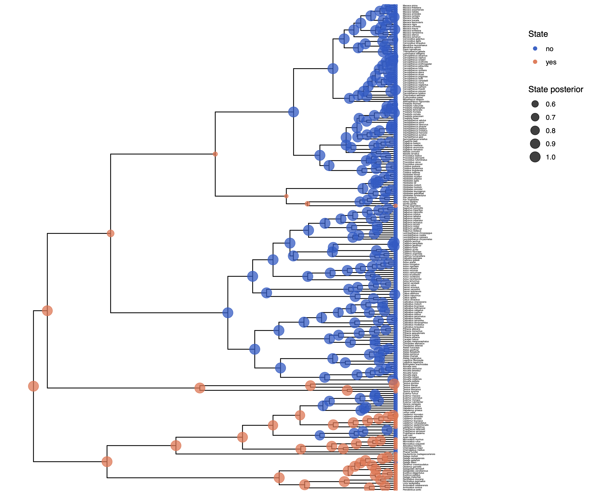
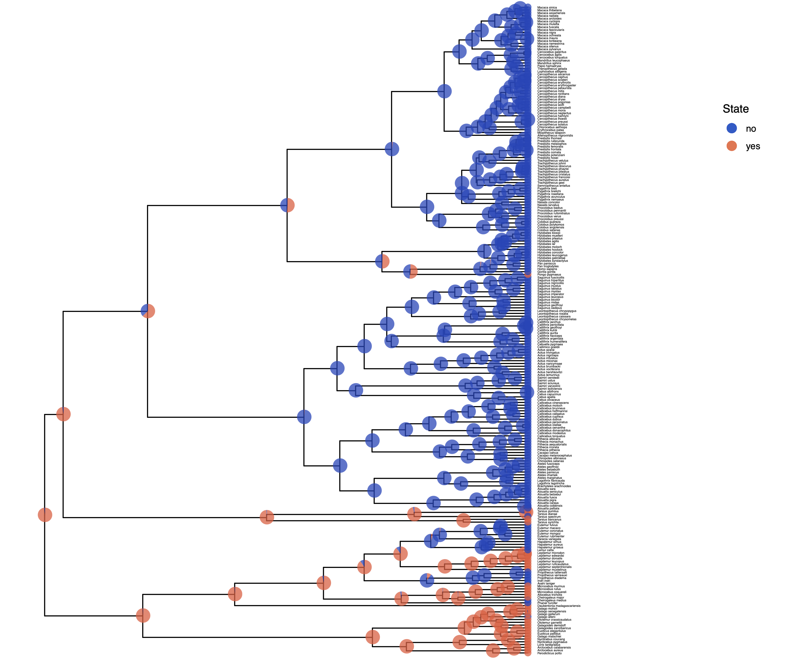
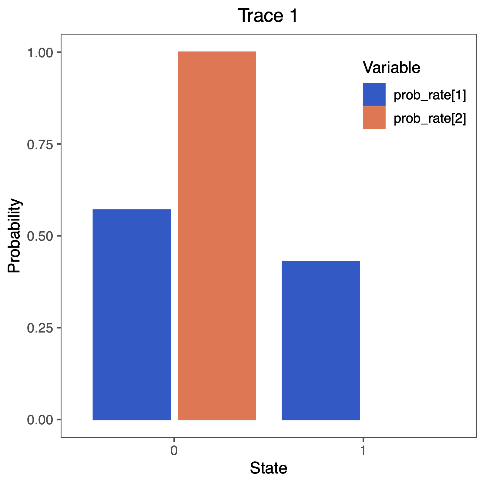

In the previous section we assumed that there are 2 different rates, which are all $>0$. Now, we will apply a reversible-jump MCMC (missing reference) to test if any of the rates is significantly larger than $0$.
Make a copy of the Rev script file you just made. Call them `mcmc_ase_freeK_RJ.Rev. This will contain the new model parameters and models.
At each place in which the output files are specified in the MCMC section, change the output path so you don’t overwrite the output from the previous exercise.
For example, you might call your output file output/solitariness_ase_irrev.log.
The only part in the model section that we are going to modify is the prior distributions and moves on the rate parameters. We will assume the same rate for the exponential prior distribution as before.
rate_pr := phylogeny.treeLength() / 10
Next, we specify that we have a 0.5 probability, a priori, that a rate is equal to 0.
mix_pr <- 0.5
We will specify again our rates within a for-loop, which makes changing this script to other number of character states very easy.
We will explain each element within in the for-loop below.
for ( i in 1:NUM_RATES ) {
rate[i] ~ dnRJMixture(0.0, dnExp(rate_pr), p=mix_pr)
prob_rate[i] := ifelse( rate[i] == 0, 1.0, 0.0 )
moves.append( mvScale( rate[i], weight=2 ) )
moves.append( mvRJSwitch( rate[i], weight=2 ) )
}
First, we can create our reversible-jump distributions dnRJMixture, which take in a constant value, 0.0 in this case, and a distribution dnExp(rate_pr).
Thus, the value is either drawn to be exactly equal to the constant value (0.0 here), or drawn from the base distribution (the exponential distribution in this case).
The last argument specifies the probability of the constant value p=mix_pr, which is important later for model comparison.
Second, since we are interested in the probability that a rate is equal to 0.0, we want to compute this posterior probability directly.
Therefore, we will use the ifelse function, which will return 1.0 if the rate is equal to 0.0, and 0.0 otherwise (if the rate is unequal to 0.0).
Hence, the frequency with which we sample a 1.0 gives us the posterior probability that a given rate is equal to 0.0.
Third, we also need to specify specific moves that jump in parameter dimension.
We will use the mvRJSwitch move that changes the value to be either equal to the constant value
provided from the dnRJMixture or a value drawn from the base distribution (the exponential distribution).
Additionally, we also need to specify moves that change the rates if they are not equal to 0.0. As usual, we use the standard scaling moves.
This is all that you need to do for this ``fancy’’ reversible-jump model. Give it a try!
We have previously seen in Discrete morphology - Ancestral State Estimation and Discrete morphology - Ancestral State Estimation with the independent rates model how the ancestral states of the simple model equal rates Markov(ERM) model and the independent rates model look.
You should repeat plotting the ancestral states now also for the irreversible (irrev) analyses.
My output is shown in
 
Next, we also want to see if there was support for the irreversible model.
Therefore, we will plot the probability that a rate was equal to 0.0.
You can do this nicely in RevGadgets (Tribble et al. 2022)
library(RevGadgets)
library(ggplot2)
CHARACTER <- "solitariness"
# specify the input file
file <- paste0("output/",CHARACTER,"_irrev.log")
# read the trace and discard burnin
trace_qual <- readTrace(path = file, burnin = 0.25)
# produce the plot object, showing the posterior distributions of the rates.
p <- plotTrace(trace = trace_qual,
vars = paste0("prob_rate[",1:NUM_RATES,"]"))[[1]] +
# modify legend location using ggplot2
theme(legend.position = c(0.85,0.85))
ggsave(paste0("Primates_",CHARACTER,"_irrev.pdf"), p, width = 5, height = 5)

Perform this test for irreversibility with different prior means, e.g., expecting 1 or 100 events along the tree. Does this have an impact on your conclusion about irreversible evolution?
Click below to begin the next exercise!